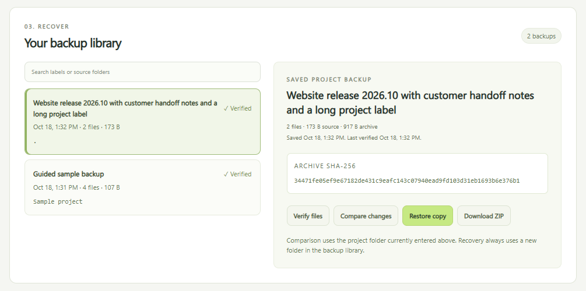
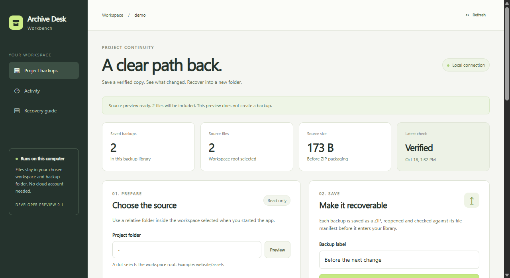
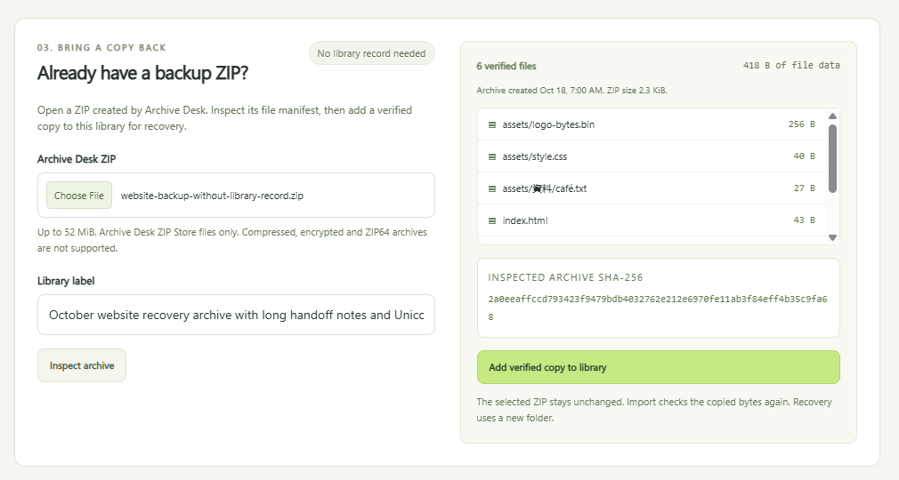
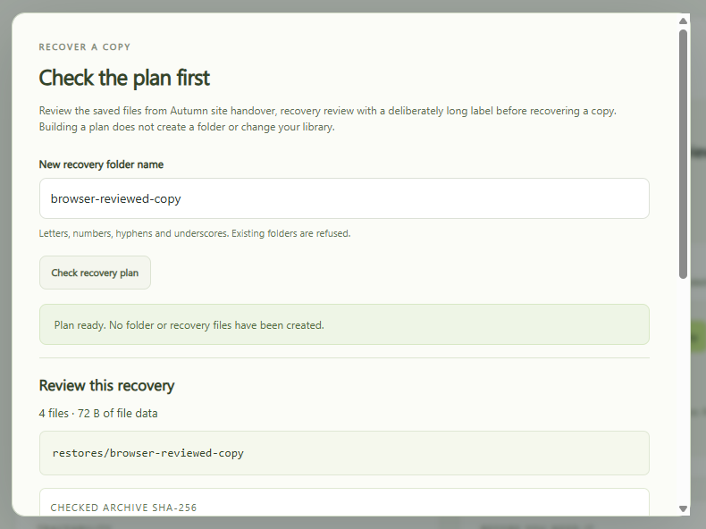
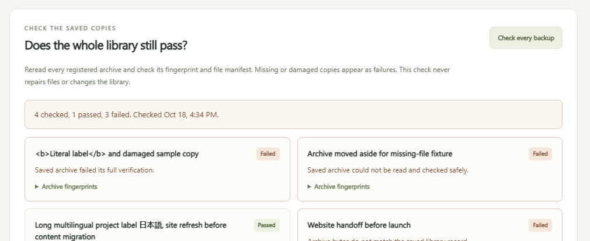
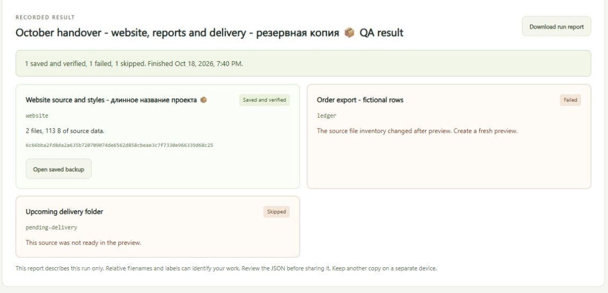
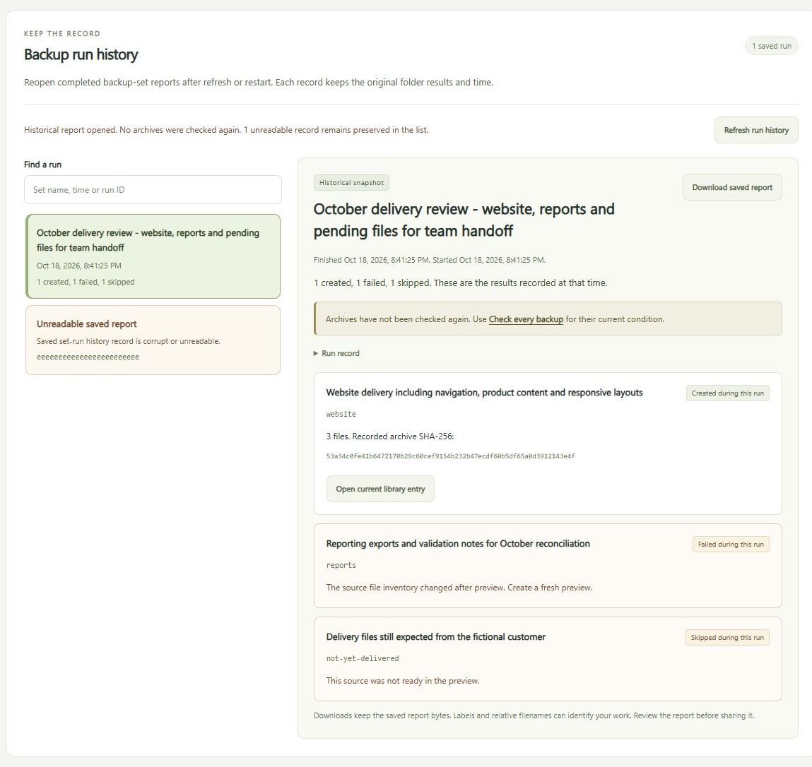
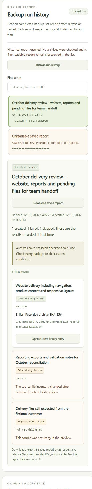

Archive Desk Workbench for Windows
Back up small projects. Prove you can get them back.
A local app for website and app folders. Save checked ZIP backups, compare what changed, review a recovery before it writes anything and keep a dated record of every run.
- Files per backup
- 500
- Size per file
- 20 MiB
- Source data per backup
- 50 MiB
- Runs on
- Windows x64

A short tour
Each part has its own guide with real screenshots from the app, using fictional sample projects.

Back up and compare
Save a checked ZIP, compare it with the current folder and restore into a new one.
Read the guide
Import an existing ZIP
Inspect a backup made elsewhere, then add a verified copy to a fresh library.
Read the guide
Review a recovery
See every file, its fingerprint and the destination before anything is written.
Read the guide
Check the whole library
Reread every saved copy and flag the missing, damaged or mismatched ones.
Read the guide
Back up several folders
Review a saved set of project folders together. One failure never hides the others.
Read the guide
Reopen run history
Find any past run after a restart and download the exact report it saved.
See below
Start on Windows
- Download the Windows x64 ZIP and extract the whole folder.
- Open Try Demo.cmd to explore a fictional sample project in your browser.
- Stop the demo with Ctrl+C. Open Start Workbench.cmd and paste your project folder and a separate folder for the backup library.
- Leave the console window open while you use the app.
Nothing else to install. Folder choices can be remembered beside the launcher, so keep those settings files private. Your backups, sets and reports stay in your library when you replace the app folder.
Or run the source
Needs Node.js 24 and no other packages. Extract the source ZIP, open a terminal in the ArchiveDeskWorkbench folder and start the server.
node server.mjs
# then open http://127.0.0.1:4330/
npm test
To use your own folders, name the project and the backup library when you start it. Type the command on one line.
node server.mjs --workspace "C:/Projects/site" --storage "D:/ProjectBackups/site" --port 4330
Run history: keep the result, return to the record
A backup run can partly succeed. Every source outcome is kept, so you can reopen it after a restart.
- 01
Partial stays partial.
Each run keeps its original time, the result for every folder and its created, failed and skipped counts. If saving the report fails, the app says so and does not repeat the backup.
- 02
Find the original run.
Search by set name, time or run ID. Valid reports stay usable when another record is unreadable. Nothing is repaired, deleted or purged automatically.
- 03
Download the saved JSON.
The download uses the stored report bytes. If the record changes after you open it, the app refuses the download until you refresh and look at the new version.
A record is not a fresh check
History describes the run as it happened. Opening it does not reread the archives or update any verification date. Use Check every backup for the current state of your saved copies.
Open current library entry jumps to the matching archive while its library record exists. From there you can verify it or review a recovery into a new folder.
Reports leave out the absolute paths of your workspace and storage. Labels and file names can still identify your work, so read the JSON before you share it.

What has been checked
- A fresh extraction of the Windows download opened the browser and recovered the four sample files byte for byte.
- The launcher prompts for your own folders produced a verified two-file backup and left out the test credential file.
- The bundled Node.js runtime matches its official checksum, and its license notices are included.
Tested on Windows x64 only. It has not been tested on Windows on ARM, macOS or Linux.
Good to know
- Up to 500 files, 20 MiB per file and 50 MiB of source data per backup. Imported ZIPs can be up to 52 MiB.
- Backups use the unencrypted Archive Desk ZIP format. Other ZIPs, including compressed and ZIP64 files, are not imported.
- Recovery restores paths and file contents, not original timestamps, permissions or empty folders.
- Common credential and dependency names are left out by filename. That is not a scan of file contents.
- Runs are manual, with no schedule or cloud sync. A scan is not an atomic snapshot, so close editors that might change files first.
- A backup on the same drive will not survive that drive failing. Keep another copy on a separate device.
Downloads
SHA-256 4c312136cf4b844df9673fcbb1e15bef2186a11fc173e0fcb932103817147d68Earlier source builds
Each guide was written as its feature shipped, so a few screenshots come from earlier builds. The current download includes every feature shown here.